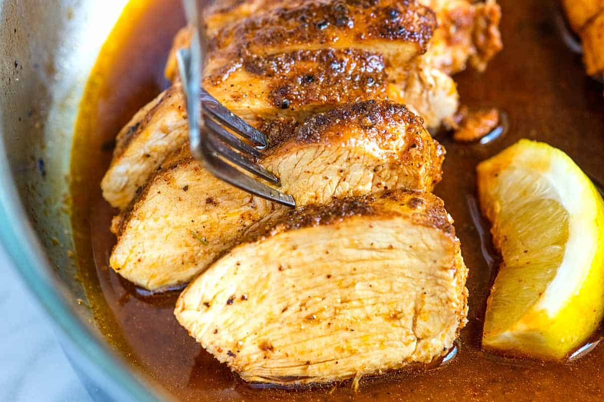

Juicy Baked Chicken Breast

Description
Soft and juicy chicken breast baked with rich garlic flavor!
The best chicken breast you'll ever eat
Ingredients
- 4 skinless, boneless chicken breast halves
- salt to taste
- 3/4 cup bread crumbs
- 1/2 cup Parmesan cheese
- 1 teaspoon dried basil
- 1/4 teaspoon ground black pepper
- 2 tablespoons olive oil
- 1 tablespoon crushed garlic
Steps
- Preheat the oven to 350 degrees F (175 degrees C)
- Season chicken breasts with little salt.
- Mix bread crumbs, Parmesan cheese, basil, and pepper in a bowl.
- Heat olive oil and garlic in a skillet over medium heat until fragrant, 1 to 2 minutes.
- Dip chicken breasts in the garlic oil, then into the bread crumb-Parmesan mixture. Place chicken in a baking dish.
- Bake in the preheated oven until chicken is no longer pink in the center and the juices run clear, about 30 minutes. An instant-read thermometer inserted into the center should read at least 165 degrees F (74 degrees C).